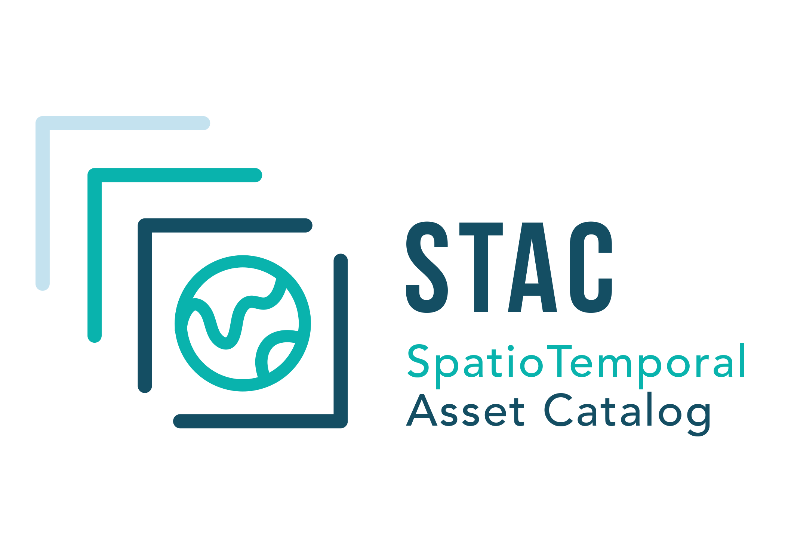
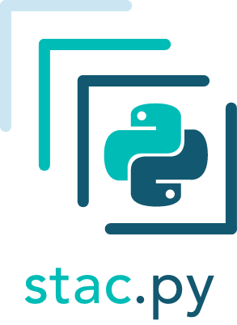
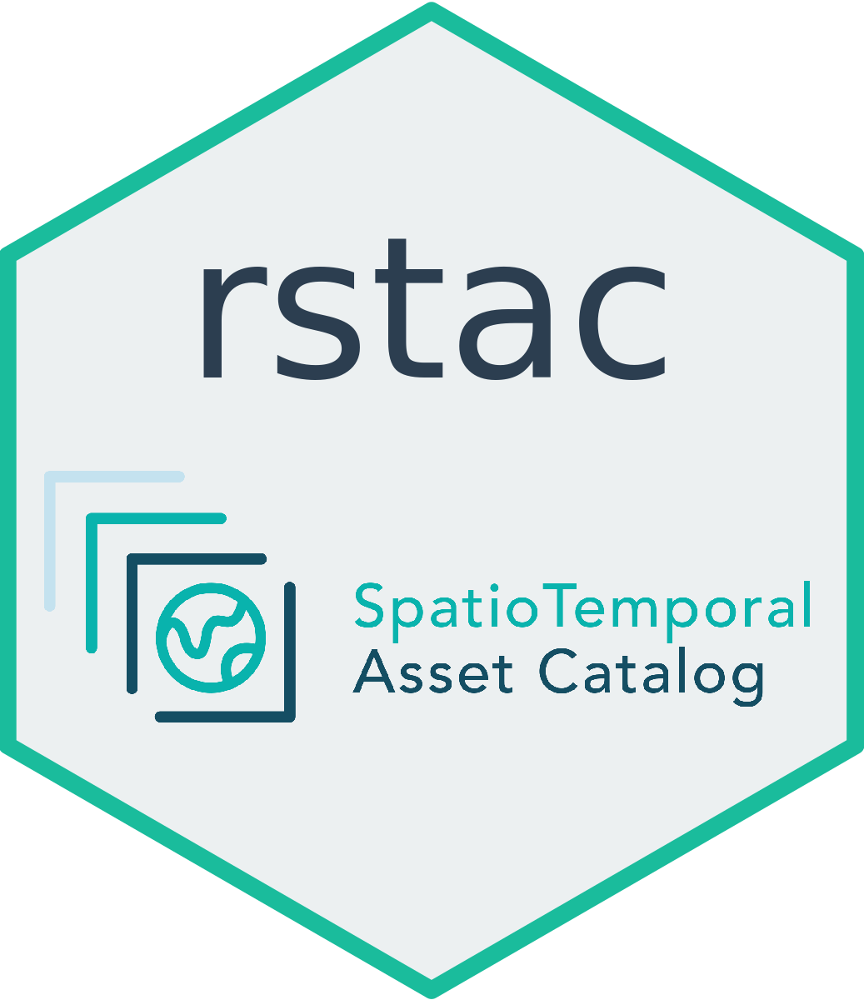

SpatioTemporal Asset Catalog - STAC¶
{kind=link}
Descrição: As coleções de imagens e cubos de dados produzidas no projeto Brazil Data Cube podem ser descobertas e acessadas através de uma API padronizada denominada SpatioTemporal Asset Catalog ou, abreviadamente, STAC. O time do projeto vem desenvolvendo diversas tecnologias apoiadas nesta especificação. O catálogo principal do projeto é disponibilizado através do bdc-stac, um serviço em Python que implementa a API STAC. Os pacotes stac.py e rstac permitem a utilização desse serviço por aplicações clientes nos ambientes Python e R, respectivamente. As aplicações BDC Collection Builder, Data Cube Builder e WTSS utilizam o stac.py para acessar os dados do projeto. O pacote SITS em R está sendo modificado para utilizar esta especificação através da biblioteca rstac. O Portal BDC é um exemplo de aplicação construída para o navegador que utiliza a API STAC diretamente em JavaScript. Este Tech Talk irá apresentar os principais conceitos relativos à especificação STAC, o estado atual das tecnologias em desenvolvimento e os planos futuros. Também será apresentado como alguns usuários têm utilizado os pacotes Python e R em ambientes de computação interativa para acesso e visualização dos dados.
Apresentadores: Matheus Zaglia, Felipe Souza e Gilberto Queiroz
Data: 18 de Setembro de 2020
Tópicos da Oficina¶
1. Introdução ao STAC¶
2. stac.py¶
{kind=link}
Um tour pelo repositório do pacote
stac.py
Hands-on: Jupyter Notebook no Google Collab.
Roadmap
3. rstac¶
{kind=link}
Repositório
Hands-on: Jupyter Notebook no Kaggle
Roadmap
Nota
É necessário criar uma conta na plataforma Kaggle. Além disso, é necessário ativar a Internet no notebook editado. Por favor, veja: Como configurar o kaggle